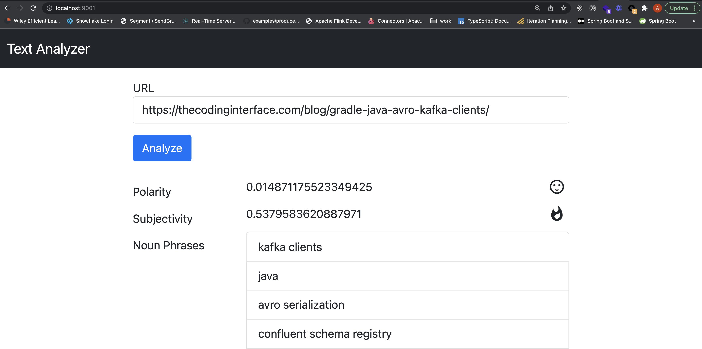

Technology drives maximal value to the enterprise not through wielding the power of specific programming languages but by composing multiple component technologies into systems that model, automate and deliver complex business processes. Luckily there exists the amazing world of Docker, container tools and the ecosystem of images. Collectively these significantly lower the technical barrier to experimenting with a wide variety of technologies leading to faster cycles of learning and innovation. In the container world there are endless purpose built images provided by open source communities and vendors with popular technologies installed and configured to run with minimal effort. Containers can be stitched together and run as Docker Compose services in relatively short order.
In this article I present an example system providing machine learning (ML) based text analytics where a user submits a web page URL to a browser and is presented with measures of sentiment (polarity and subjectivity) along with extracted noun phrases predicted to be semantically meaningful. The system is constructed of multiple containerized technologies and is deployed to a Docker environment running on my laptop as a set of Docker Compose services.
Below is the high-level architecture of the system and the source code can be found on GitHub.
The frontend application utilizes the Python based Flask microframework along with Vue.js for an interactive UI. The URL is submitted via the frontend and relayed to a Kafka topic. Next another containerized Python application consumes the URL from Kafka and utilizes the open source TextBlob and Natural Language Toolkit (NLTK) ML libraries to perform text analytics then writes the result to a Redis key/value store running in yet another container. While this happens Javascript in the frontend polls a REST API for results matching to the original URL then displays them in the browser.
The Flask app source is contained in a single file shown below consisting of a handler function that serves up the UI web page and two REST based endpoints. One REST endpoint is for handling a POST request with the URL then producing it to the containers running Kafka and the second REST endpoint is for fetching the results of the analysis.
# nlpapp/app.py
import atexit
import json
import logging
import os
import sys
import redis
from flask import Flask, render_template, request, jsonify
from kafka import KafkaProducer
app = Flask(__name__)
def make_kafka_producer():
import time
time.sleep(10) # make sure kafka is up
producer = KafkaProducer(bootstrap_servers=[os.environ['BOOTSTRAP_SERVER']])
atexit.register(lambda p: p.flush(), producer)
return producer
producer = make_kafka_producer()
redis_client = redis.Redis(host=os.environ['REDIS_HOST'], port=6379)
@app.route('/')
def home():
return render_template('home.html')
@app.route('/analyze-text', methods=('POST',))
def analyze_text():
request_data = request.get_json()
url = request_data['url']
try:
producer.send(os.environ['KAFKA_TOPIC'], url.encode('utf-8'))\
.add_callback(SuccessCallback(url))\
.add_errback(ErrCallback(url))
redis_client.delete(url)
return jsonify({'status': 'submitted', 'message': 'submitted for analysis {url}'.format(url=url)})
except Exception as e:
app.logger.error("Error submitting url", exc_info=e)
return jsonify({'status': 'failed'})
@app.route("/analysis-results")
def analysis_results():
url = request.args.get('url')
results = {}
try:
results = json.loads(redis_client.get(url).decode('utf-8'))
except Exception as e:
app.logger.error("Error fetching results", exc_info=e)
return jsonify(results)
class SuccessCallback:
# ... omitted for brevity
class ErrCallback:
# ... omitted for brevityThe next key part is the Kafka consumer which fetches the webpage of the URL pulled from Kafka and utilizes the TextBlob library for text analysis as shown below. Specifically, the text analysis calculates sentiment metrics of polarity and subjectivity. For polarity the measures span from -1 inferring the content is harshly negative to +1 inferring joyous positive tone with values near 0 being relatively neutral. The subjectivity score ranges from 0 inferring factual based content to 1 implying opinion based reasoning.
# nlpconsumer/webnlp.py
import json
import logging
import os
import sys
import redis
import requests
from bs4 import BeautifulSoup
from kafka import KafkaConsumer
from textblob import TextBlob
logger = logging.getLogger(__name__)
def main(args):
logger.info("Started nlpconsumer")
redis_client = redis.Redis(host=args['redis_host'], port=6379)
consumer = KafkaConsumer(args['topic'],
bootstrap_servers=args['bootstrap_servers'],
group_id=args['consumer_group'])
for message in consumer:
url = message.value.decode('utf-8')
logger.info("processing " + url)
try:
response = requests.get(url)
soup = BeautifulSoup(response.content)
text = soup.get_text()
blob = TextBlob(text)
text_analysis = TextAnalysis(url, blob)
redis_client.set(url, json.dumps(text_analysis.to_dict()))
except Exception as e:
logger.error(f"Failed analyzing {url}", exc_info=e)
class TextAnalysis:
def __init__(self, url : str, blob : TextBlob):
self.url = url
self.polarity = blob.sentiment.polarity
self.subjectivity = blob.sentiment.subjectivity
self.nouns = [str(w) for w in blob.noun_phrases]
def to_dict(self):
return {
'url': self.url,
'polarity': self.polarity,
'subjectivity': self.subjectivity,
'nouns': self.nouns
}
if __name__ == '__main__':
import time
time.sleep(10) # make sure other services are up
args = {
'bootstrap_servers': os.environ['BOOTSTRAP_SERVER'],
'topic': os.environ['KAFKA_TOPIC'],
'consumer_group': os.environ['CONSUMER_GROUP'],
'redis_host': os.environ['REDIS_HOST']
}
main(args)Rather than dumping a heap of HTML, CSS and Javascript into the article I’ve chosen to just show an image of the UI. Curious readers can have a look at the nlpapp/templates/home.html file of the linked GitHub repo.

Now that the basic components of the system have been discussed I can demonstrate what is needed to stitch the pieces together in Docker containers and run them locally with Docker Compose.
The frontend app is containerized per the instructions in the Dockerfile shown below. This packages up the previously presented Flask microframework web application along with the other required Python dependencies and launches it using the Gunicorn application server.
FROM python:3.8-slim-buster
COPY requirements.txt /
RUN pip3 install -r /requirements.txt
COPY nlpapp/ /app
WORKDIR /app
EXPOSE 5000
ENTRYPOINT ["gunicorn", "app:app", "--threads", "5", "-b", "0.0.0.0:5000"]The Kafka consumer and subsequent text analytics program is similarly containerized per the following Dockerfile. Here the various Kafka and text analytics libraries are packaged into the container along with the Python consumer source code and launched as a standalone program.
FROM python:3.8-slim-buster
COPY requirements.txt /
RUN pip3 install -r /requirements.txt && python -m textblob.download_corpora
WORKDIR /app
ADD . .
ENTRYPOINT ["python", "webnlp.py"]The remaining components are the Kafka message bus cluster and a Redis key/value store which are normally fairly complex pieces of technology to install and configure. However, Confluent provides open source community licensed images for both Zookeeper and the Kafka broker. The Redis open source project provides a similarly well established image as well. So all that remains is to assemble a docker-compose.yml file which composes the various containers into a single deployable unit as shown below.
version: '2'
services:
zookeeper:
image: confluentinc/cp-zookeeper:6.1.1
hostname: zookeeper
container_name: zookeeper
ports:
- "2181:2181"
environment:
ZOOKEEPER_CLIENT_PORT: 2181
ZOOKEEPER_TICK_TIME: 2000
broker:
image: confluentinc/cp-kafka:6.1.1
hostname: broker
container_name: broker
depends_on:
- zookeeper
ports:
- "29092:29092"
- "9092:9092"
- "9101:9101"
environment:
KAFKA_BROKER_ID: 1
KAFKA_ZOOKEEPER_CONNECT: 'zookeeper:2181'
KAFKA_LISTENER_SECURITY_PROTOCOL_MAP: PLAINTEXT:PLAINTEXT,PLAINTEXT_HOST:PLAINTEXT
KAFKA_ADVERTISED_LISTENERS: PLAINTEXT://broker:29092,PLAINTEXT_HOST://localhost:9092
KAFKA_OFFSETS_TOPIC_REPLICATION_FACTOR: 1
KAFKA_TRANSACTION_STATE_LOG_MIN_ISR: 1
KAFKA_TRANSACTION_STATE_LOG_REPLICATION_FACTOR: 1
KAFKA_GROUP_INITIAL_REBALANCE_DELAY_MS: 0
nlpapp:
build: nlpapp
container_name: nlpapp
environment:
BOOTSTRAP_SERVER: "broker:29092"
KAFKA_TOPIC: "urls"
REDIS_HOST: redis
depends_on:
- redis
- broker
- nlpconsumer
ports:
- "9001:5000"
nlpconsumer:
build: nlpconsumer
container_name: nlpconsumer
environment:
BOOTSTRAP_SERVER: "broker:29092"
KAFKA_TOPIC: "urls"
REDIS_HOST: redis
CONSUMER_GROUP: urls-0
depends_on:
- redis
- broker
redis:
image: redis
hostname: redis
container_name: redis
ports:
- "6379:6379"Execute the following command in the same directory as this project’s docker-compose.yml file.
docker-compose upWith that single command the Docker Compose services are launched and after a minute or two I can point my browser to http://127.0.0.1:9001 and I’m presented with the demo app.
Pretty amazing right?
In just a few hundred lines of code plus a couple of Dockerfiles and some YAML I was able to cobble together a reasonably complex proof of concept (POC) style demo application. In doing so I got a feel for event driven architecture, Redis key-value datastore, Kafka based pub/sub messaging, Python REST APIs and text analytics. However, the learning doesn’t need to stop there. One could experiment with swapping out the Kafka message bus with something else like Celery and RabbitMQ or even just Celery with Redis. Similarly, I could spin up a MongoDB or Cassandra database to take the place of the Redis key/value store or swap out the frontend from a Python Flask implementation to Java Springboot.
I'd like to thank Linda Rohr and Jerrid Derr for their support and feedback on this article.